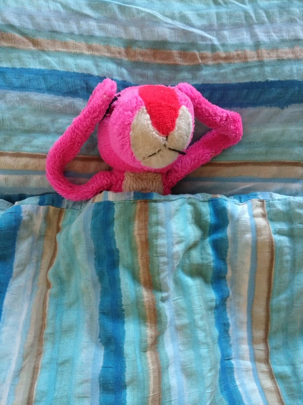
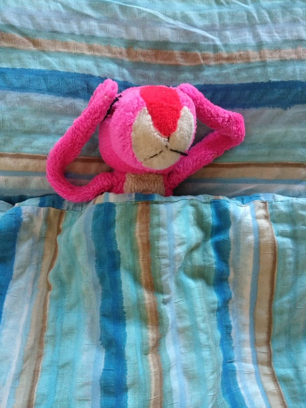
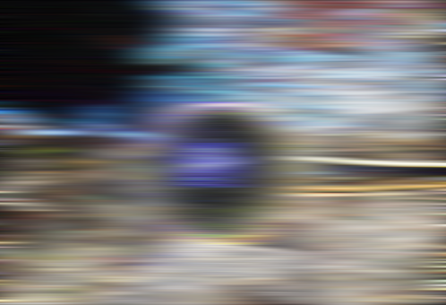
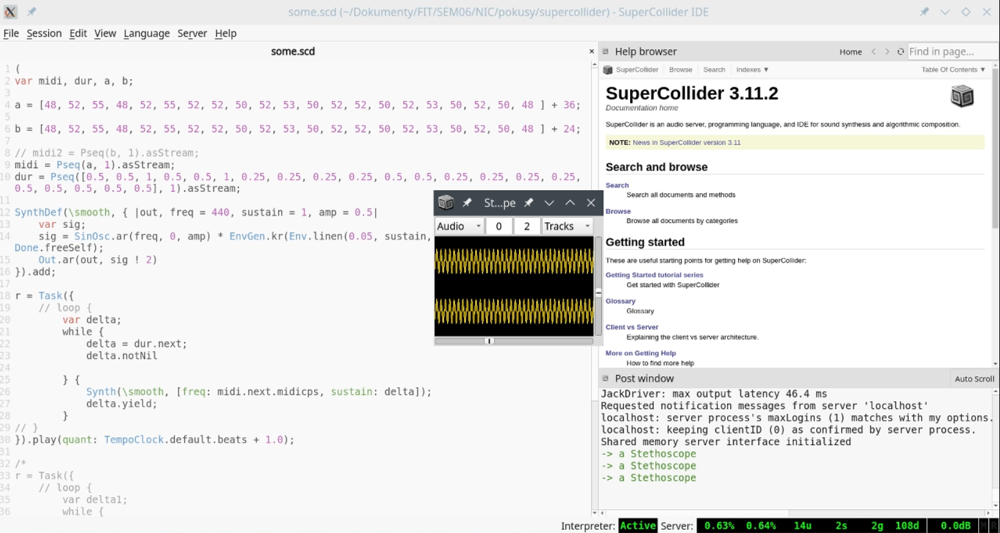

MUSIC WAVE
Projekt předmětu NI-CCC v letním semestru 2020-2021
Autoři: Radka Kolembusová
TEAM
CO
Pokus o zhudebnění obrazu.
- Nějakým způsobem detekovat harmonickou část a rytmickou část hudby z obecné teorie hudby.
- Z obrazu vysypat frekvence / patterny / ... a z nich dle harmonických pravidel vytvořit songy. Aby byl obraz slyšet, ale nebyl to random šum, který se hodí do DJ mixu. Chci opravdu najít melodii.
- Zkombinovat přidat více nástrojů a zaručit, aby byly v harmonii - Ideálně začít nejjednodušší kombinací bicí + nástroj

Jak
- To se ještě zjistí...
- Součást analýzy možností
Plánovaný postup
- Analýza
- Podobných prací
- Možností postupu
- Programovacího jazyka
- Drobné pokusy dle jednotlivých možností
- Experimenty
- Porovnání možností
- Výběr finální metody / skupiny metod
- Implementace
- Inicializace projektu
- Základní struktura
- Něco to dělá
Aktuální progress
Experimenty
One to one -> bez vztahu k okolí vodorovně, se vztahem k okolí svisle
 

Analýza
Zkoumání výsledků hranové detekce.


Experimentování s Supercolliderem
